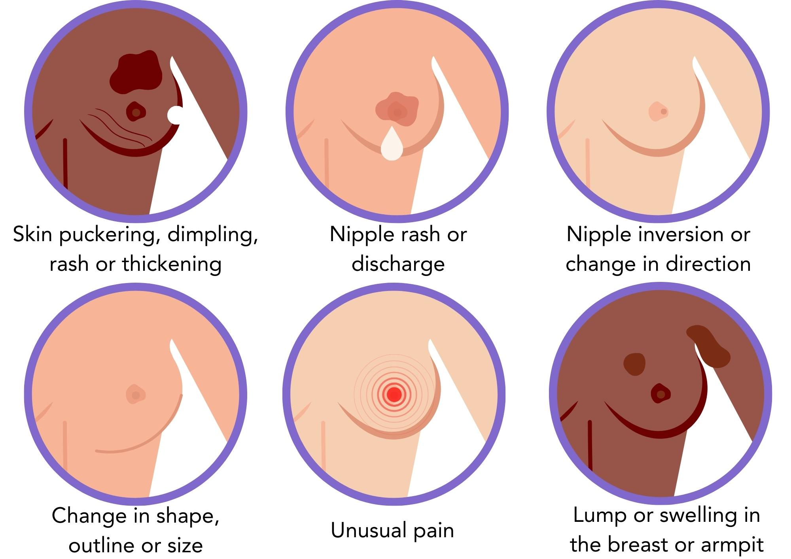
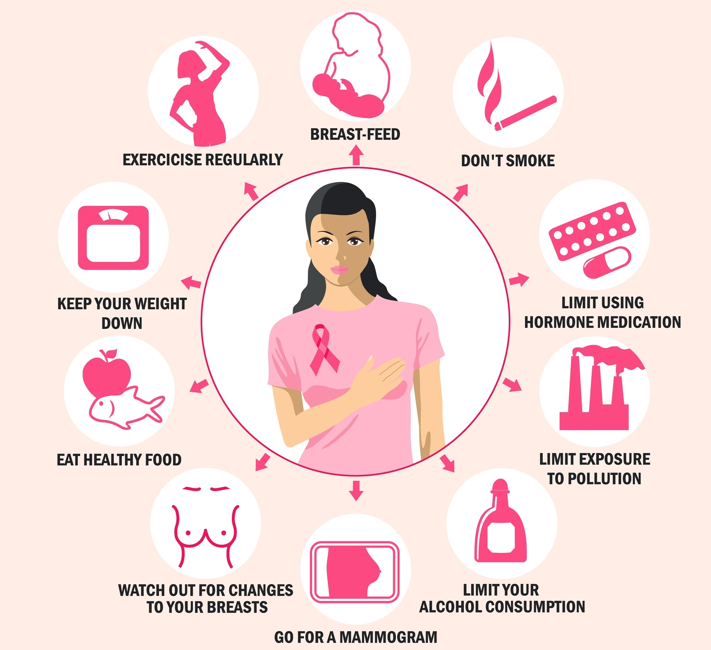

Signs and Prevention of Breast Cancer
Symptoms of Breast Cancer
- A lump or hard ball in the breast or under the arm.
- Swelling or Big size in breast.
- Skin looks bumpy or rough like Orange
- Water, Blood, or Other liquid coming out of nipple
- Nipple goes inside or looks pulled in
- Red, dry or flaky skin on the breast or the nipple
- Pain in breast never goes away
- Swelling near the armpit or neck
Signs of breast cancer

Measures to avoid breast cancer
- Check your breasts every month
- Eat healthy and stay active
- Keep a healthy weight
- Go for regular checkups
– Feel for any new lumps or changes.
– More fruits and veggies, and daily walking or exercise.
– Extra weight can increase your risk.
– Early detection can save your life.
Preventive Measures
